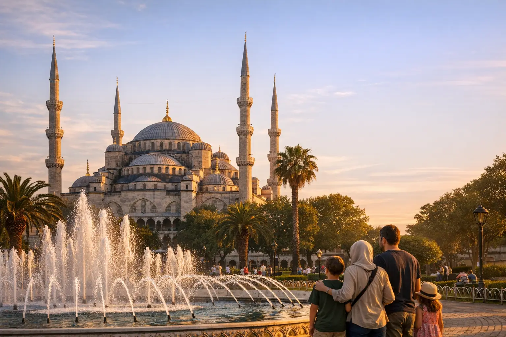
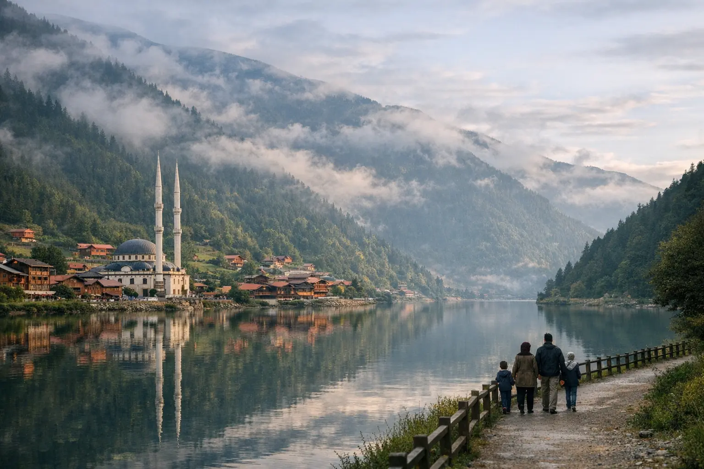

برنامج إسطنبول 5 أيام
خمسة أيام متوازنة في إسطنبول: المدينة القديمة، البوسفور بين قارتين، ورحلة يوم إلى بحيرة سبانجا ومعشوقية، مع فندق مختار وسائق يتحدث العربية.
السعرحسب الموسم — اطلب عرضك

عروض موسمية · عيد الفطر 1448هـ
عروض عيد الفطر 2027 في تركيا تبدأ بالتخطيط المبكر، فالعيد متوقع حوالي 9 أو 10 مارس 2027 حسب رؤية الهلال، وهو موسم سفر مزدحم للعائلات العربية والتركية معاً. نرتب لك الطيران والفندق والسائق في برنامج واحد يناسب أيام عطلتك.
يأتي عيد الفطر 2027 في بداية الربيع، وهو وقت مناسب لزيارة تركيا قبل حرارة الصيف وزحمته. لكن أيام العيد نفسها موسم ذروة، إذ تسافر عائلات خليجية وعربية كثيرة في الأسبوع نفسه، ويكون عيد الفطر (رمضان بايرامي) عطلة رسمية في تركيا تتنقل فيها العائلات التركية بين المدن أيضاً.
لذلك ننصح بحجز الطيران والفنادق مبكراً، خاصة الغرف العائلية والأجنحة وبيوت البنغل في سبانجا، فهي محدودة العدد وتمتلئ مبكراً في المواسم. والحجز المبكر يمنحك خيارات أوسع في الفنادق ومواعيد الرحلات، ويسهّل ترتيب السائق الذي يرافقك طوال الرحلة. ومن يحجز قبل رمضان يجد عادةً مرونة أكبر في اختيار الرحلات المباشرة ومواعيد الوصول المناسبة للأطفال.
في مارس تكون إسطنبول باردة إلى معتدلة مع زخات مطر، وقد يبقى الثلج على قمة أولوداغ في أوائل الشهر، بينما تكون أنطاليا أدفأ وأكثر شمساً. اختر من البرامج المقترحة أدناه أو اطلب برنامجاً مخصصاً، وسنقترح عليك التوزيع الأنسب لأيام عطلتك. ويمكن أيضاً أن نجمع مدينتين بأجواء مختلفة، كإسطنبول مع أنطاليا، لتجمع العائلة بين المدينة والشمس.
الخيارات
إذا كانت عطلتك أياماً قليلة، فإن برنامج إسطنبول 5 أيام يجمع المدينة القديمة والبوسفور ويوماً في سبانجا ومعشوقية.
إسطنبول وبورصة 7 أيام أو إسطنبول وسبانجا وبورصة 8 أيام، مع فرصة لرؤية الثلج على أولوداغ إذا بقي حتى أوائل مارس.
طرابزون وأوزنجول 7 أيام لمحبي الجبال والبحيرات، مع العلم أن مارس بارد هناك وبعض طرق الهضاب قد تتأثر بالثلج.
أضف برنامج كابادوكيا 3 أيام إلى رحلة إسطنبول بطيران داخلي قصير، ورحلة المنطاد اختيارية ومرتبطة بالطقس.
برنامج أنطاليا 7 أيام للعائلات التي تفضل الشمس والمنتجعات، مع جولات إلى الشلالات والبلدة القديمة وتلفريك أولمبوس.
إذا امتدت إجازتك قرابة أسبوعين، فإن برنامج تركيا للعائلات 12 يوماً يجمع إسطنبول وسبانجا وطرابزون وأوزنجول بإيقاع هادئ.
برامج مقترحة

خمسة أيام متوازنة في إسطنبول: المدينة القديمة، البوسفور بين قارتين، ورحلة يوم إلى بحيرة سبانجا ومعشوقية، مع فندق مختار وسائق يتحدث العربية.

أسبوع يجمع سحر إسطنبول وهدوء بورصة: المدينة القديمة والبوسفور، ثم ليلتان في بورصة مع تلفريك أولوداغ وأولى الجوامع العثمانية.

ثلاث وجهات في رحلة واحدة: معالم إسطنبول، ثم ليلتان بين بحيرة سبانجا وغابات معشوقية، وليلة في بورصة مع جبل أولوداغ.

أسبوع في الشمال التركي: ليلتان على بحيرة أوزنجول، وليلة في أيدر وسط الجبال، ودير سوميلا ومدينة طرابزون، مع سائق يتحدث العربية.

ثلاثة أيام في كابادوكيا: ليلتان في فندق كهف، منطاد الشروق اختيارياً، الجولة الحمراء والخضراء، مع الطيران الداخلي من إسطنبول والعودة.

أسبوع على الريفييرا التركية: منتجع على البحر، البلدة القديمة وشلالات دودان، تلفريك أولمبوس، سيدا ومانافغات، وقلعة ألانيا.

رحلة عائلية بإيقاع هادئ: معالم إسطنبول وأماكن الأطفال، ليلتان في بنغل بسبانجا، ثم طرابزون وأوزنجول بين البحيرات ومزارع الخيول.
كيف تعمل
تاريخ السفر والعودة التقريبي، وعدد المسافرين، والمدن التي تفكر فيها.
نرسل لك برنامجين أو ثلاثة بمدن وفئات فنادق مختلفة، مع ما يشمله كل عرض بوضوح.
بعد موافقتك نؤكد الطيران والفنادق وفق شروط الدفع والإلغاء المكتوبة في العرض.
نستقبلك في المطار، ويرافقك سائقك في الجولات، وفريقنا متاح عبر واتساب طوال الرحلة.
قائمة التحضير
احجز الآن
املأ النموذج وسيفتح واتساب برسالة جاهزة، ويصلك عرض مكتوب قبل أي دفع.
أسئلة وأجوبة
يُتوقع أن يكون عيد الفطر 1448هـ حوالي 9 أو 10 مارس 2027، والموعد النهائي يُحدد برؤية الهلال في كل بلد. لذلك ننصح بترك مرونة يوم أو يومين في تواريخ السفر.
غالباً نعم، فالعيد عطلة رسمية في تركيا تتنقل فيها العائلات التركية، ويتزامن مع سفر عائلات عربية كثيرة. نخفف ذلك ببدء الجولات مبكراً واختيار أوقات أهدأ للأماكن الأكثر زحمة.
في إسطنبول يكون الجو بارداً إلى معتدل نهاراً مع احتمال المطر، وفي طرابزون والشمال أبرد مع ضباب، وفي كابادوكيا تكون الليالي باردة جداً، بينما أنطاليا أدفأ ومشمسة غالباً. هذه أنماط عامة تختلف من سنة لأخرى.
قد يبقى الثلج على جبل أولوداغ قرب بورصة في أوائل مارس، وكذلك في المرتفعات الجبلية في الشمال، لكنه غير مضمون ويعتمد على الموسم. نتحقق من الحالة قبل موعد رحلتك ونقترح البديل المناسب.
كلما كان الحجز أبكر كان أفضل، ويفضّل قبل بداية رمضان المتوقعة حوالي 8 أو 9 فبراير 2027. فالحجز المبكر يمنحك خيارات أوسع في الطيران والغرف العائلية.
نعم، البرامج المقترحة نقطة بداية فقط، ويمكننا تعديل عدد الأيام والمدن وفئة الفنادق، أو إضافة كابادوكيا أو أنطاليا إلى رحلة إسطنبول.
من دليل أويا

برنامج عائلي متوازن لعشرة أيام في تركيا يجمع المدينة والطبيعة والثلج أو البحيرات، مع أفكار لأنشطة الأطفال ونصائح عملية للسكن والتنقل مع الصغار.

بدلاً من أرقام عامة لا تناسب رحلتك، نشرح لك مكونات تكلفة السفر إلى تركيا وما يرفعها ويخفضها، مع طريقة بسيطة لحساب ميزانية أسبوع ونصائح عملية للتوفير.

تركيا بلد بمناخات متعددة، فما يناسب إسطنبول قد لا يناسب أنطاليا أو أوزنجول في الشهر نفسه. دليل شهر بشهر يساعدك على اختيار التوقيت والوجهة معاً.
خدمة شخصية من البداية للنهاية
أخبرنا بوجهتك وتواريخك وعدد المسافرين، ويصلك عرض مفصّل خلال وقت قصير — بدون أي التزام.